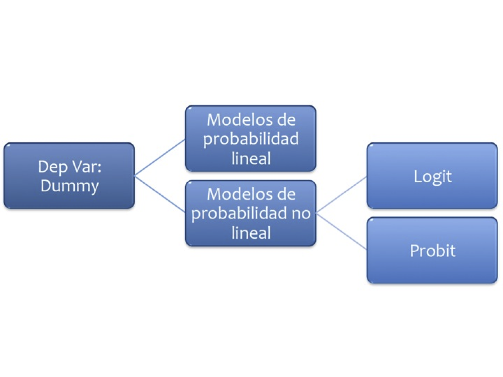

9. Modelos de Probabilidad#
9.1. Probabilidad lineal#
En este caso la variable dependiente es una dummy
{kind=link}
Se trata de modelos del tipo:
Veamos un ejemplo: Abrir la base MROZ de Wooldridge y ajuste el modelo:
import pandas as pd
import matplotlib.pyplot as plt
import numpy as np
# np.set_printoptions(precision=2)
uu = "https://raw.githubusercontent.com/vmoprojs/DataLectures/master/WO/mroz.csv"
datos = pd.read_csv(uu,header = None)
datos.columns = ["inlf","hours", "kidslt6", "kidsge6",
"age", "educ", "wage",
"repwage","hushrs" , "husage", "huseduc" ,
"huswage" , "faminc", "mtr","motheduc",
"fatheduc" , "unem", "city" , "exper" ,
"nwifeinc" , "lwage" ,"expersq"]
import statsmodels.formula.api as smf
from statsmodels.graphics.regressionplots import abline_plot
from scipy import stats
reg1 = smf.ols('inlf ~ nwifeinc + educ + exper + expersq + age+kidslt6 + kidsge6',data = datos).fit()
print(reg1.summary())
OLS Regression Results
==============================================================================
Dep. Variable: inlf R-squared: 0.264
Model: OLS Adj. R-squared: 0.257
Method: Least Squares F-statistic: 38.22
Date: Wed, 02 Oct 2024 Prob (F-statistic): 6.90e-46
Time: 05:51:40 Log-Likelihood: -423.89
No. Observations: 753 AIC: 863.8
Df Residuals: 745 BIC: 900.8
Df Model: 7
Covariance Type: nonrobust
==============================================================================
coef std err t P>|t| [0.025 0.975]
------------------------------------------------------------------------------
Intercept 0.5855 0.154 3.798 0.000 0.283 0.888
nwifeinc -0.0034 0.001 -2.351 0.019 -0.006 -0.001
educ 0.0380 0.007 5.151 0.000 0.024 0.052
exper 0.0395 0.006 6.962 0.000 0.028 0.051
expersq -0.0006 0.000 -3.227 0.001 -0.001 -0.000
age -0.0161 0.002 -6.476 0.000 -0.021 -0.011
kidslt6 -0.2618 0.034 -7.814 0.000 -0.328 -0.196
kidsge6 0.0130 0.013 0.986 0.324 -0.013 0.039
==============================================================================
Omnibus: 169.137 Durbin-Watson: 0.494
Prob(Omnibus): 0.000 Jarque-Bera (JB): 36.741
Skew: -0.196 Prob(JB): 1.05e-08
Kurtosis: 1.991 Cond. No. 3.06e+03
==============================================================================
Notes:
[1] Standard Errors assume that the covariance matrix of the errors is correctly specified.
[2] The condition number is large, 3.06e+03. This might indicate that there are
strong multicollinearity or other numerical problems.
¿Qué hemos ajustado?
aux = smf.ols('inlf ~ educ',data = datos).fit()
plt.figure()
plt.plot(datos.educ,datos.inlf,'o');
plt.plot(datos.educ,aux.fittedvalues,'-',color='r');
plt.xlabel('educ');
plt.ylabel('inlf');
Excepto kidsge6 los coeficientes son significativos.
Se introdujo la experiencia cuadrática para capturar un efecto decreciente en el efecto deseado (
inlf). ¿Cómo lo interpretamos?
.039 - 2(.0006)exper = 0.39 - .0012exper
El punto en el que la experiencia ya no tiene efecto en
inlfes \(.039/.0012 = 32.5\). ¿Cuantos elementos de la muestra tienen más de 32 años de experiencia?
Se añade exper al cuadrado porque queremos dar la posibilidad que los años adicionales de expericnecia contribuyan con un efecto decreciente.
Trabajemos ahora con la predicción, y revisemos el resultado:
pred_vals = reg1.predict()
aux = list(zip(datos.inlf,pred_vals))
print(aux[0:5])
stats.describe(pred_vals)
[(1, 0.6636123221355517), (1, 0.7009165727274149), (1, 0.6727286212890473), (1, 0.7257441305286598), (1, 0.5616358247349595)]
DescribeResult(nobs=753, minmax=(-0.3451102646574087, 1.1271505290421102), mean=0.5683930942895058, variance=0.06490433214015537, skewness=-0.4241251818053438, kurtosis=-0.07391834122184227)
¿Qué podemos notar?
Existen valores mayores a 1 e inferiores a 0.
\(R^{2}\) ya no es interpretable en estas regresiones.
Usaremos una probabilidad de ocurrencia, digamos 0.5
prediccion_dum = (pred_vals>=0.5)*1
tab = pd.crosstab(datos.inlf,prediccion_dum)
(tab.iloc[0,0]+tab.iloc[1,1])/datos.shape[0]
0.7343957503320053
9.2. Logit#
La regresión logística puede entenderse simplemente como encontrar los parámtros \(\beta\) que mejor asjuten:
Donde se asume que el error tiene una distribución logística estándar
Donde \(s\) es el parámetro de escala y \(\mu\) el de locación (sech es la función secante hiperbólico).
Otra forma de entender la regresión logística es a través de la función logística:
donde \(t\in \mathbb{R}\) y \(0\leq\sigma (t)\leq1\).
Asumiento \(t\) como una función lineal de una variable explicativa \(x\), tenemos:
Ahora la función logística se puede expresar:
Ten en cuenta que \(p (x)\) se interpreta como la probabilidad de que la variable dependiente iguale a éxito en lugar de un fracaso. Está claro que las variables de respuesta \(Y_ {i}\) no se distribuyen de forma idéntica: \( P (Y_ {i} = 1 \ mid X )\) difiere de un punto \(X_ {i}\) a otro, aunque son independientes dado que la matriz de diseño \(X\) y los parámetros compartidos \(\beta\).
Finalmente definimos la inversa de la función logística, \(g\), el logit (log odds):
lo que es equivalente a:
Interpretación:
\(g\) es la función logit. La ecuación para \(g (p (x))\) ilustra que el logit (es decir, log-odds o logaritmo natural de las probabilidades) es equivalente a la expresión de regresión lineal.
\(ln\) denota el logaritmo natural.
\(p (x)\) es la probabilidad de que la variable dependiente sea igual a un caso, dada alguna combinación lineal de los predictores. La fórmula para \(p (x)\) ilustra que la probabilidad de que la variable dependiente iguale un caso es igual al valor de la función logística de la expresión de regresión lineal. Esto es importante porque muestra que el valor de la expresión de regresión lineal puede variar de infinito negativo a positivo y, sin embargo, después de la transformación, la expresión resultante para la probabilidad \(p (x)\) oscila entre \(0\) y \(1\).
\(\beta _ {0}\) es la intersección de la ecuación de regresión lineal (el valor del criterio cuando el predictor es igual a cero).
\(\beta _ {1} x\) es el coeficiente de regresión multiplicado por algún valor del predictor.
la base \(e\) denota la función exponencial.
9.2.1. Ejemplo 1#
Abra la tabla 15.7
Los datos son el efecto del Sistema de Enseñanza Personalizada (PSI) sobre las calificaciones.
Calificación \(Y = 1\) si la calificación final fue A
\(Y = 0\) si la calificación final fue B o C
TUCE= calificación en un examen presentado al comienzo del curso para evaluar los conocimientos previos de macroeconomíaPSI= 1 con el nuevo método de enseñanza, 0 en otro casoGPA= promedio de puntos de calificación inicial
Ajuste el siguiente modelo:
smf.logit('GRADE ~ GPA + TUCE + PSI',data = datos).fit()Interprete el modelo
En los modelos cuya variable regresada binaria, la bondad del ajuste tiene una importancia secundaria. Lo que interesa son los signos esperados de los coeficientes de la regresión y su importancia práctica y/o estadística.
Importamos los datos y revisamos la variable dependiente:
uu = "https://raw.githubusercontent.com/vmoprojs/DataLectures/master/GA/tabla15_7.csv"
datos = pd.read_csv(uu,sep = ';')
datos.columns
# import statsmodels.api as sm
datos.pivot_table(index = 'GRADE', aggfunc = [len])
| len | |||||
|---|---|---|---|---|---|
| GPA | LETTER | OBS | PSI | TUCE | |
| GRADE | |||||
| 0 | 21 | 21 | 21 | 21 | 21 |
| 1 | 11 | 11 | 11 | 11 | 11 |
Ajustamos el modelo:
ajuste1 = smf.logit('GRADE ~ GPA + TUCE + PSI',data = datos).fit()
print(ajuste1.summary())
Optimization terminated successfully.
Current function value: 0.402801
Iterations 7
Logit Regression Results
==============================================================================
Dep. Variable: GRADE No. Observations: 32
Model: Logit Df Residuals: 28
Method: MLE Df Model: 3
Date: Wed, 02 Oct 2024 Pseudo R-squ.: 0.3740
Time: 05:51:40 Log-Likelihood: -12.890
converged: True LL-Null: -20.592
Covariance Type: nonrobust LLR p-value: 0.001502
==============================================================================
coef std err z P>|z| [0.025 0.975]
------------------------------------------------------------------------------
Intercept -13.0213 4.931 -2.641 0.008 -22.687 -3.356
GPA 2.8261 1.263 2.238 0.025 0.351 5.301
TUCE 0.0952 0.142 0.672 0.501 -0.182 0.373
PSI 2.3787 1.065 2.234 0.025 0.292 4.465
==============================================================================
ajuste1.get_margeff(at='mean').summary()
| Dep. Variable: | GRADE |
|---|---|
| Method: | dydx |
| At: | mean |
| dy/dx | std err | z | P>|z| | [0.025 | 0.975] | |
|---|---|---|---|---|---|---|
| GPA | 0.5339 | 0.237 | 2.252 | 0.024 | 0.069 | 0.998 |
| TUCE | 0.0180 | 0.026 | 0.685 | 0.493 | -0.033 | 0.069 |
| PSI | 0.4493 | 0.197 | 2.284 | 0.022 | 0.064 | 0.835 |
mm = ajuste1.get_margeff(at='all').margeff
mm[0:10,:]
array([[0.07311607, 0.00246188, 0.06154047],
[0.15815168, 0.0053251 , 0.1331134 ],
[0.43011639, 0.01448239, 0.36202116],
[0.07130492, 0.0024009 , 0.06001605],
[0.69272252, 0.02332457, 0.58305197],
[0.09507939, 0.00320141, 0.08002659],
[0.0729182 , 0.00245522, 0.06137393],
[0.1381988 , 0.00465327, 0.11631942],
[0.2791564 , 0.00939944, 0.23496087],
[0.60069976, 0.02022608, 0.50559808]])
¿Son, en conjunto, los coeficientes significativos?
hyp = '(Intercept = 0, GPA = 0,TUCE=0,PSI=0)'
ajuste1.wald_test(hyp,scalar = True)
<class 'statsmodels.stats.contrast.ContrastResults'>
<Wald test (chi2): statistic=8.873128862019607, p-value=0.06435007959304212, df_denom=4>
np.exp(ajuste1.params)
Intercept 0.000002
GPA 16.879715
TUCE 1.099832
PSI 10.790732
dtype: float64
Esto indica que los estudiantes expuestos al nuevo método de enseñanza son 10 veces más propensos a obtener una A que quienes no están expuestos al nuevo método, en tanto no cambien los demás factores.
ajuste1.predict(which = 'linear')
array([-3.60073413, -2.76041291, -1.46791368, -3.62720615, 0.28141441,
-3.32098459, -3.60359585, -2.91209282, -2.07928416, 0.81658669,
-3.68551751, -1.45002683, -0.74349868, -1.42927827, -0.5710702 ,
-3.46980278, -2.87059569, -3.21545265, 0.3634383 , 0.66679813,
-2.72739871, 2.25228291, -1.14298655, 1.7510952 , 1.64556325,
-0.0755037 , 0.55554274, -0.8131547 , 1.67096266, 2.85041739,
0.11660073, -2.08025454])
9.2.2. Ejemplo 2#
Este ejemplo tiene por objetivo lograr la mejor predicción de actividades ilícitas (Uafe). Para ello cuentan con un conjunto de datos de entrenamiento:
codigoCliente: Identificación del cliente
sumValTot: Suma del valor transaccionado al mes
Frecuencia: Número de transacciones del mes
edad: Edad del cliente
estadoCivil: C: Casada, D: Divorciada, N & missing: Sin info, S: Soltera, U: Unida, V: viuda
nivelEducacion: missing o N: Sin info, P o S: primaria o secundaria, Sup: Superior
sexo: F: Femenino, M: Masculino
tipoVivienda: P: Propia, NP: No propia
nivelIngresos: Ingresos del cliente
Uafe 1: sospechosa, 0: no sospechosa
9.2.2.1. Paso 1: lectura de datos#
uu = "https://raw.githubusercontent.com/vmoprojs/DataLectures/refs/heads/master/challengeTrainUafe.csv"
datos = pd.read_csv(uu,sep = ",")
datos.describe()
| codigoCliente | sumValTot | Frecuencia | edad | nivelIngresos | Uafe | |
|---|---|---|---|---|---|---|
| count | 53871.000000 | 53871.000000 | 53871.000000 | 53871.000000 | 53871.000000 | 53871.000000 |
| mean | 330632.616937 | 2607.336492 | 13.792040 | 43.990559 | 1080.108966 | 0.049192 |
| std | 214567.625599 | 7885.583015 | 12.211262 | 14.429626 | 4759.779271 | 0.216270 |
| min | 1.000000 | 0.000000 | 1.000000 | 7.553425 | 0.000000 | 0.000000 |
| 25% | 40082.500000 | 251.045000 | 4.000000 | 32.531507 | 537.480000 | 0.000000 |
| 50% | 444937.000000 | 1528.440000 | 11.000000 | 40.238356 | 849.150000 | 0.000000 |
| 75% | 484662.000000 | 2430.470000 | 20.000000 | 51.857534 | 1186.490000 | 0.000000 |
| max | 570579.000000 | 342658.560000 | 148.000000 | 122.591781 | 849019.000000 | 1.000000 |
9.2.2.2. Paso 2: Separación de datos en entrenamieto y prueba#
from sklearn.model_selection import train_test_split
train_df, test_df = train_test_split(datos, random_state=0)
9.2.2.3. Paso 3: Exploración de datos y selección de variables#
#pip install sweetviz
import sweetviz as sv
#my_report = sv.analyze(train_df)
my_report = sv.compare([train_df,'Train'],[test_df,'Test'],target_feat = 'Uafe')
my_report.show_html()
Report SWEETVIZ_REPORT.html was generated! NOTEBOOK/COLAB USERS: the web browser MAY not pop up, regardless, the report IS saved in your notebook/colab files.
9.2.2.4. Paso 4: Selección de variables#
from scipy.stats import ks_2samp, chi2_contingency
#Prueba KS (variables continuas)
#Diccionario
ks_results = {}
#Bucle
for column in ['sumValTot', 'Frecuencia', 'edad', 'nivelIngresos']:
#Division para los dos grupos
group0 = train_df[train_df['Uafe'] == 0][column]
group1 = train_df[train_df['Uafe'] == 1][column]
#Prueba KS
ks_stat, ks_pvalue = ks_2samp(group0, group1)
ks_results[column] = (ks_stat, ks_pvalue)
ks_results
{'sumValTot': (0.17290718018142842, 1.0048834804337842e-49),
'Frecuencia': (0.11513715049095713, 3.254205628336455e-22),
'edad': (0.1312846698783937, 8.96037182115701e-29),
'nivelIngresos': (0.22921117173977315, 1.7264084511184317e-87)}
#Prueba de Chi-Cuadrado para variables categóricas
#Diccionario
chi2_results = {}
#Bucle
for column in ['estadoCivil', 'nivelEducacion', 'sexo', 'tipoVivienda']:
#Tabla de contingencia para frecuencias
contingency_table = pd.crosstab(train_df[column], train_df['Uafe'])
#Almacenar resultados
chi2_stat, chi2_pvalue, _, _ = chi2_contingency(contingency_table)
chi2_results[column] = (chi2_stat, chi2_pvalue)
chi2_results
{'estadoCivil': (76.6598679377394, 1.7466999003822897e-14),
'nivelEducacion': (65.9457747501759, 4.786928719287691e-15),
'sexo': (0.0, 1.0),
'tipoVivienda': (190.52545850499502, 2.44138130904844e-43)}
9.2.2.5. Paso 5: Entrenar un modelo con variables seleccionadas#
import numpy as np
from sklearn.model_selection import train_test_split
from sklearn.preprocessing import StandardScaler, OneHotEncoder
from sklearn.compose import ColumnTransformer
from sklearn.pipeline import Pipeline
from sklearn.linear_model import LogisticRegression
from sklearn.metrics import roc_curve, roc_auc_score, classification_report, confusion_matrix
import matplotlib.pyplot as plt
#Separar características y etiqueta
X = train_df[['sumValTot', 'Frecuencia', 'edad', 'nivelIngresos', 'estadoCivil', 'nivelEducacion', 'tipoVivienda']]
y = train_df['Uafe']
#Dividir datos en entrenamiento y validación
X_train, X_val, y_train, y_val = train_test_split(X, y, test_size=0.2, random_state=42)
#Definir las listas de categóricas y numéricas
numeric_features = ['sumValTot', 'Frecuencia', 'edad', 'nivelIngresos']
categorical_features = ['estadoCivil', 'nivelEducacion', 'tipoVivienda']
#Standscaler a caracteristicas numericas y Onehotencoder a las categoricas
preprocessor = ColumnTransformer(
transformers=[
('num', StandardScaler(), numeric_features),
('cat', OneHotEncoder(), categorical_features)
])
#Crear un pipeline con preprocesador y modelo
pipeline = Pipeline(steps=[('preprocessor', preprocessor),
('classifier', LogisticRegression(max_iter=1000))])
#Entrenar a mi modelo
pipeline.fit(X_train, y_train)
#Generar las predicciones y probabilidades de predicción
y_pred = pipeline.predict(X_val)
y_pred_prob = pipeline.predict_proba(X_val)[:, 1]
#pd.DataFrame(y_pred).describe()
print(pd.DataFrame(y_pred_prob).describe())
import seaborn as sns
sns.histplot(y_pred_prob)
0
count 8081.000000
mean 0.050019
std 0.025515
min 0.005388
25% 0.034189
50% 0.043318
75% 0.061253
max 0.999986
<Axes: ylabel='Count'>
#Calcular la curva ROC y AUC
fpr, tpr, thresholds = roc_curve(y_val, y_pred_prob)
roc_auc = roc_auc_score(y_val, y_pred_prob)
# Encontrar el mejor punto de corte
J = tpr - fpr
ix = np.argmax(J)
best_threshold = thresholds[ix]
# Graficar la curva AUC
plt.figure()
plt.plot(fpr, tpr, color='darkorange', lw=2, label='Curva AUC (área = %0.2f)' % roc_auc)
plt.plot([0, 1], [0, 1], color='navy', lw=2, linestyle='--')
plt.scatter(fpr[ix], tpr[ix], marker='o', color='black', label='Mejor Punto de Corte')
plt.xlim([0.0, 1.0])
plt.ylim([0.0, 1.05])
plt.xlabel('Tasa de Falsos Positivos')
plt.ylabel('Tasa de Verdaderos Positivos')
plt.title('Curva ROC')
plt.legend(loc="lower right")
plt.show()
print('Mejor punto de corte:', best_threshold)
Mejor punto de corte: 0.042205996006508914
#Generar un reporte de clasificación y mi matriz de confusión
# Predecir con el mejor punto de corte
predicciones_binarias = (y_pred_prob >= best_threshold).astype(int)
classification_rep = classification_report(y_val, predicciones_binarias)
conf_matrix = confusion_matrix(y_val, predicciones_binarias)
#Imprimir la linea devuelve el area bajo la curva ROC, reporte de clasificacion y la matriz de confusión
print("AUC:",roc_auc,"\n")
print("Matriz de confusión\n",conf_matrix,"\n")
print("Reporte de clasificación\n",classification_rep,"\n")
AUC: 0.6222964540048455
Matriz de confusión
[[3740 3970]
[ 115 256]]
Reporte de clasificación
precision recall f1-score support
0 0.97 0.49 0.65 7710
1 0.06 0.69 0.11 371
accuracy 0.49 8081
macro avg 0.52 0.59 0.38 8081
weighted avg 0.93 0.49 0.62 8081
9.3. Probit#
En los modelos logia se propuso la logística, en este caso se propone la Función de Distribución Acumulada Normal. Suponga que la variable de respuesta es binaria, 1 o 0. \(Y\) podría representar la presencia/ausencia de una condición, éxito/fracaso, si/no. Se tiene también un vector de regresoras \(X\), el modelo toma la forma:
donde \(Pr\) es la prbabilidad y \(\Phi\) distribución acumulada de la normal estándar \({\displaystyle \Phi (x)={\frac {1}{\sqrt {2\pi }}}\int _{-\infty }^{x}e^{-t^{2}/2}\,dt}\). Los parámetros \(\beta\) se estiman típicamente con el método de máxima verosimilitud.
Ejemplo
uu = "https://raw.githubusercontent.com/vmoprojs/DataLectures/master/GA/tabla15_7.csv"
datos = pd.read_csv(uu,sep = ';')
ajuste1 = smf.probit('GRADE ~ GPA + TUCE + PSI',data = datos).fit()
print(ajuste1.summary())
Optimization terminated successfully.
Current function value: 0.400588
Iterations 6
Probit Regression Results
==============================================================================
Dep. Variable: GRADE No. Observations: 32
Model: Probit Df Residuals: 28
Method: MLE Df Model: 3
Date: Wed, 02 Oct 2024 Pseudo R-squ.: 0.3775
Time: 05:51:51 Log-Likelihood: -12.819
converged: True LL-Null: -20.592
Covariance Type: nonrobust LLR p-value: 0.001405
==============================================================================
coef std err z P>|z| [0.025 0.975]
------------------------------------------------------------------------------
Intercept -7.4523 2.542 -2.931 0.003 -12.435 -2.469
GPA 1.6258 0.694 2.343 0.019 0.266 2.986
TUCE 0.0517 0.084 0.617 0.537 -0.113 0.216
PSI 1.4263 0.595 2.397 0.017 0.260 2.593
==============================================================================
ajuste1.get_margeff(at='mean').summary()
| Dep. Variable: | GRADE |
|---|---|
| Method: | dydx |
| At: | mean |
| dy/dx | std err | z | P>|z| | [0.025 | 0.975] | |
|---|---|---|---|---|---|---|
| GPA | 0.5333 | 0.232 | 2.294 | 0.022 | 0.078 | 0.989 |
| TUCE | 0.0170 | 0.027 | 0.626 | 0.531 | -0.036 | 0.070 |
| PSI | 0.4679 | 0.188 | 2.494 | 0.013 | 0.100 | 0.836 |
mm = ajuste1.get_margeff(at='all').margeff
mm[0:10,:]
array([[0.07255307, 0.00230845, 0.06365122],
[0.17584323, 0.00559486, 0.15426826],
[0.44108314, 0.01403409, 0.38696473],
[0.07391114, 0.00235166, 0.06484266],
[0.64252589, 0.02044346, 0.5636916 ],
[0.10206861, 0.00324755, 0.08954537],
[0.07368267, 0.00234439, 0.06464222],
[0.15292232, 0.00486558, 0.13415961],
[0.3033272 , 0.00965106, 0.26611067],
[0.59359928, 0.01888675, 0.520768 ]])
ajuste1.predict(which = 'linear')
array([-2.09308603, -1.61569183, -0.87816803, -2.08420699, 0.13722837,
-1.92311086, -2.08569187, -1.69993698, -1.23289159, 0.42099513,
-2.14186033, -0.86486457, -0.45841206, -0.85895528, -0.36825763,
-2.01475018, -1.6881184 , -1.86842727, 0.23630576, 0.40479606,
-1.53878182, 1.30785551, -0.60319106, 1.02555852, 0.97087493,
-0.02826337, 0.3649008 , -0.44357981, 0.99452719, 1.6670186 ,
0.10033167, -1.15745135])